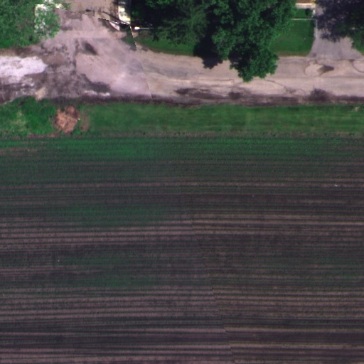
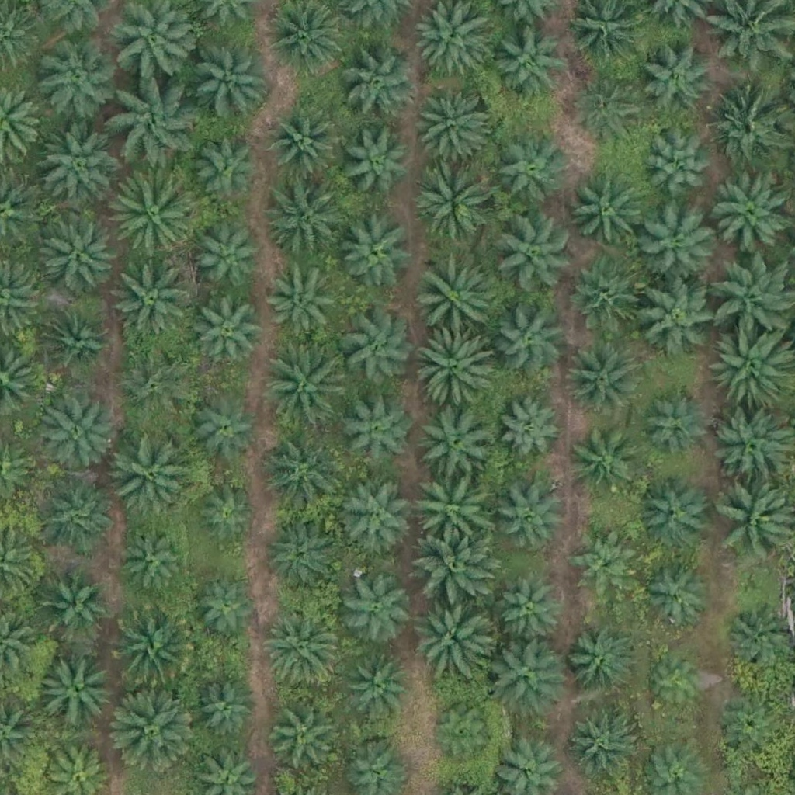
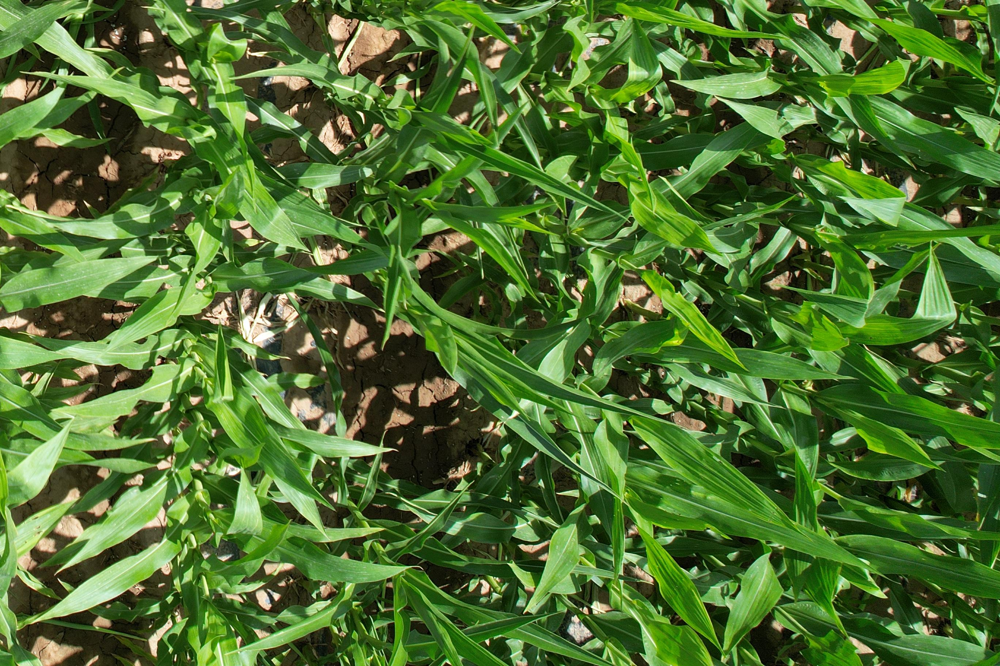

多模态数据处理流程

AgroSet数据集样本

农田实地测试场景

AgroMind是一个基于深度学习的智能农业决策系统，整合卫星影像、气象数据和土壤传感器等多源信息。 我们的创新点包括： 1) 提出跨模态特征融合模块，有效整合异构农业数据； 2) 开发轻量级时序预测模型，在边缘设备实现实时分析； 3) 构建包含50万张标注图像的开放数据集AgroSet。 实验表明，相比现有方法，我们的系统在农作物产量预测任务中平均绝对误差降低37%，病害识别准确率提升24%。 数据集已在HuggingFace平台开源。